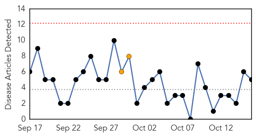
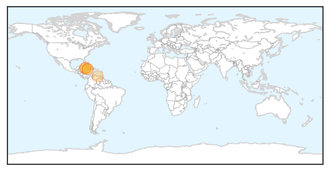

West Nile Virus
30-Day Web Trend
0 alerts, 0 warnings
30-Day Twitter Trend
0 alerts, 0 warnings

Article Locations

Article Confidences

Top Articles:
Top Tweets:
-
No tweets found for Oct 16, 2014
Chikungunya
30-Day Web Trend
0 alerts, 2 warnings

30-Day Twitter Trend
0 alerts, 0 warnings

Article Locations
Article Confidences

Top Articles:
- 0.997
- Five new imported cases of chikungunya reported
- 0.994
- Chik V Cases Reach 25 - Cayman Islands
- 0.971
- Too Late for Jamaican Government to ‘Kiss and Make Up’ When It Comes to Chikungunya · Global Voices
- 0.931
- Shortages hinder Venezuela's battle against fever outbreaks
- 0.512
- Chik-V seen as costing Jamaica billions in lost productivity
Top Tweets:
-
No tweets found for Oct 16, 2014